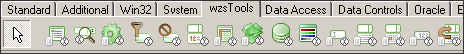
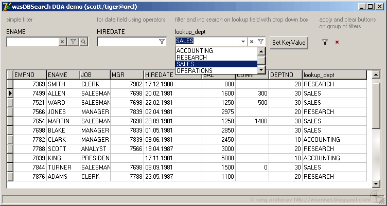
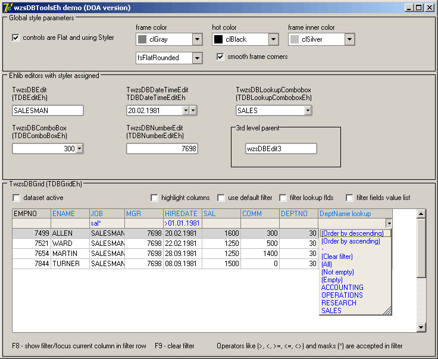
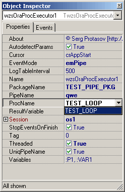
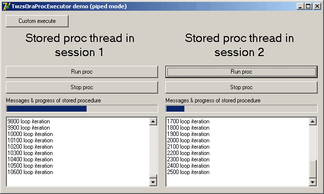

© Protasov Serg
http://wzonnet.blogspot.com wzonnet@kemcity.ru http://gen-des.blogspot.com
wzsTools - пакеты компонент для Delphi 5/7

Пакеты:
wzsToolsCommon - пакет, содержащий общие компоненты, custom-классы, редакторы компонентов, и функции для остальных пакетов. В частности:
- компонента TwzsStyler, управляющая стилями отрисовки контролов (flat / flatRounded стили ala DevExpress :), цвета рамок, hot-tracking и т.п.). Поддерживается для компонент библиотеки EhLib (см. пакет wzsDBToolsEh);
- класс TwzsFilterExprBuilder, позволяющий формировать валидные выражения для стандартного фильтра TDataset.Filter, по заданному списку полей и выражений с поддержкой операций сравнения (>, <, >= и т.д.);
- ApplyProcOnControl, ApplyProcOnComponent - процедуры быстрого перебора объектов внутри других обектов (внутри owner'ов или parent'ов), с фильтром по классу и по маске имени объекта;
- ApplyProcOnActionCategory - перебор объектов TAction с фильтром по категории (свойству TAction.Category);
Данный пакет должен быть откомпилирован и установлен первым, т.к. на него ссылаются все остальные пакеты wzsTools.
Требования: Delphi 5/7.
wzsComponents - компоненты и контролы, унаследованные от стандартного VCL:
- TwzsDBLookupCheckBox - компонент, отображающий значения поля TDataset.ListSource.ListField датасета в виде списка, элементы которого можно пометить, и используя свойства KeyValues и KeyValuesString, получить список выбранных значений поля KeyField в виде массива или строки с разделителями;
Требования: Delphi 5/7.
wzsDBSearch - пакет компонент и контролов для фильтрации и поиска в TDataset. Фильтрация и поиск в датасете реализуется через основные компоненты пакета: TwzsDBSearchEdit и TwzsDBSearchEngine. TwzsDBSearchEngine содержит методы и настройки фильтрации/поиска соединенных с ним контролов TwzsDBSearchEdit. Особенности:
- автоматическая поддержка фильтрации по lookup-полям TDataset с выпадающим списком;
- одновременное сочетание в контроле TwzsDBSearchEdit фильтра и инкрементного поиска по датасету;
- поддержка операций сравнения (>, <, =, <>, <=, >=) при вводе пользователем выражений фильтра;
- компоненты TwzsGroupFilterButton и TwzsGroupClearButton для группового применения/снятия фильтра через связанный TwzsDBSearchEngine;

Требования: Delphi 5/7.
wzsDBToolsEh - специально для фанатов EhLib, пакет компонент, унаследованных от контролов этой библиотеки, с поддержкой flat-стиля через TwzsStyler. Прорисовка через TwzsStyler во всех контролах включается при установленном свойстве Flat=true и Additional.Styler. Все свойства потомков ehlib-контролов выделены, для удобства, в отдельный объект Additional. Компоненты:
- TwzsDBGrid - потомок TDBGridEh, расширенный встроенным фильтром/поиском для STFilter по dataset'у (через TwzsFilterExprBuilder), автоматическая настройка STFilter на lookup-поля, автоматическое наполнение списков STFilter через встроенный TMemTableEh, подкраска колонок в зависимости от свойств readonly / required полей, настройка горячих клавиш для открытия/применения/очистки фильтра и поиска, поддержка flat стиля (см. TwzsStyler);
- TwzsDBEdit, TwzsDBComboBox, TwzsDBDateTimeEdit, TwzsDBNumberEdit, TwzsDBLookupCombobox - db контролы, потомки аналогичных контролов EhLib (TCustomDBEditEh и т.п.), расширенные flat-отрисовкой (свойством Additional.Styler);
- TwzsMonthDBEdit - контрол, наследник TCustomDBComboBoxEh. Обеспечивает выбор даты в виде месяца года с указанием формата даты. Содержит кнопку для «перелистывания» месяцев по типу «следующий/предыдущий», кнопку выпадающего списка для выбора месяца из списка, выбора пустой даты или выбора "даты по умолчанию". Свойства MonthFormat, YearFormat определяют формат месяца и года (напр., mmmm, yyyy), Delimiter определяет символ разделитель между месяцем и годом. Свойство Value возвращает выбранную дату, округленную до первого числа месяца. Свойства DefaultDate, DefaultLineVisible, DefaultLineText настраивают дату по умолчанию. Свойства NullLineText, NullLineVisible настраивают null дату в выпадающем списке.

Требования: Delphi 5/7, установленный Ehlib 4 или выше.
wzsOraDBTools - пакет компонент на базе Direct Oracle Access. Основные компоненты и процедуры:
- TwzsOraProcExecutor - компонент, позволяющий запускать хранимые процедуры Oracle с возможностью получения сообщений из этих процедур в Delphi приложении. Функция получения сообщений в компоненте может быть использована для протоколирования, построения прогресс-баров, отладки - т.е. в тех случаях, когда требуется отправить клиентскому приложению любую информацию из хранимой процедуры во время ее выполнения. Особенности:
- хранимые процедуры можно запускать как в потоке приложения, так и в отдельном потоке, тем самым не "вешая" приложение;
- получение сообщений из хранимых процедур Oracle через событие в компоненте, используя механизм dbms_pipe или механизм опроса таблицы в автономной транзакции;
- обмен сообщениями присходит в рамках одной сессии (сессия запустивная процедуру, прочитает сообщение, предназначенное только для нее);
- остановка хранимой процедуры любой момент с откатом изменений базы;
- готовые PL/SQL процедуры для отправки сообщений из хранимых процедур;
- редакторы свойств для выбора имени пакета, процедуры и установки параметров процедуры в Object Inspector Delphi;

- TwzsOracleDataset - потомок TOracleDataset со следующими расширениями:
- возможность восстановления позиции текущей записи (свойство KeepBookmark) после рефреша датасета;
- обновлением датасета после post'a (свойство RefreshAfterPost);
- свойствами AllowInsert, AllowDelete;
- GetFieldData - возвращает в TStrings результат выполнения запроса при выборке одного поля;
- GetFinalSQL - возвращает текст SQL-запроса TOracleDataset с подставленными значениями переменных любого типа;
- GetSessionID - возвращает идентификатор сессии TOracleSession;
Требования: Delphi 5/7, установленный Direct Oracle Access. Также для работы компоненты в режиме принятия сообщений, необходимо скомпилировать пакет ope_pkgs\ope_pipe_pkg.sql (режим emPipe), или пакет ope_pkgs\ope_logtable_pkg.sql (режим emLogTable).
Двойной клик на любой компоненте вызывает редактор данного компонента и отображает информацию о версии пакета.
Установка пакетов
- распаковать архив с сохранением структуры папок;
- открыть, скомпилировать и установить пакет Common\wzsToolsCommonD[x].dpk;
- открыть, скомпилировать и установить нужный пакет из соответствующей папки (напр., wzsComponents\wzsComponentsD7.dpk);
- добавить в Library Path пути ко всем установленным пакетам;
[x] - версия Delphi.
Компоненты пакетов, их свойства и методы
TwzsDBSearchEngine = class(TComponent)
property DataSource: TDataSource
Связывает поисковый движок с датасетом, который будет фильтроваться компонентами TwzsDBSearchEdit.
property LocateOptions: TLocateOptions
property FilterOptions: TFilterOptions
Настройки фильтра и поиска движка.
property PartialOnStrings: boolean
Добавлять ли символы "*" к выражению при фильтрации строковых полей. Форсирует поиск по вхождению строки выражения в значение поля датасета.
property FilterExpr: TwzsFilterExprBuilder
Объект, формирующий готовое выражение для фильтра, с учетом типов полей, операций сравнения и т.п. Может быть использован разработчиками для построения выражений для стандартного фильтра TDataset.
procedure Filter;
Отфильтровать связанный датасет.
procedure ClearFilter;
Убрать фильтр у датасета.
TwzsGroupFilterButton = class(TwzsCustomSearchEngineButton)
Кнопка применения фильтра. По клику фильтрует TDataset на основе введенных выражений фильтра всех компонент связанных с поисковым движком.
property SearchEngine: TwzsDBSearchEngine
Привязка кнопки к TwzsDBSearchEngine.
TwzsGroupClearButton = class(TwzsCustomSearchEngineButton)
Кнопка очистки фильтра. По клику снимает фильтр у датасета связанного с поисковым движком и очищает текст у контролов TwzsDBSearchEdit.
property SearchEngine: TwzsDBSearchEngine
Привязка кнопки к TwzsDBSearchEngine.
TwzsDBSearchEdit = class(TCustomEdit)
Контрол для ввода выражений фильтра и/или поиска для конечного пользователя.
property ClearButton: TwzsEditButtonOptions
property DropDownButton: TwzsEditButtonOptions
property FilterButton: TwzsEditButtonOptions
property LocateButton: TwzsEditButtonOptions
Управляет свойствами кнопок контрола для очистки фильтра, применения фильтра, кнопки выпадающего списка и кнопки поиска. Свойство ShortCut определяет клавишу, по которой будет выполнено соответствующее кнопке действие, если фокус находится внутри контрола.
property ClearText: boolean
Определяет, очищать ли текст контрола при снятии фильтра.
property DataField: string
Поле, по которому будет вестись поиск и фильтрация (из SearchEngine.Datasource.Dataset).
property DropDownBox: TwzsDropDownBoxOptions
Настройки выпадающего списка (в режиме lookup-поля).
property DynamicLocate: boolean
Вводит котрол в режим инкрементного поиска по датасету.
property KeyValue: Variant
Устанавливает KeyValue в режиме lookup-поля и выбирает значение результирующего поля в контроле.
property SearchEngine: TwzsDBSearchEngine
Ссылка на поисковый движок.
TStyles = (styUltraFlat, stySoftFlat, stySoftBorder, styDefault, styFlatEhlib);
property Style: TStyles
Определяет внешний вид контролов.
TwzsOraProcExecutor = class(TComponent)
property Session: TOracleSession
Сессия Direct Oracle Access
property ProcName: string
Имя хранимой процедуры/функции Oracle
property PackageName: string
Имя пакета Oracle, в котором содержится хранимая процедура/функция.
property Variables: TVariables
Переменные, передаваемые в хранимую процедуру. Имена переменных должны совпадать с именами параметров вызываемой хранимой процедуры.
property ResultVariable: string
Имя переменной из списка Variables, в которую будет писаться результат выполнения функции Oracle.
property Cursor: TCursor
Курсор приложения во время выполнения хранимой процедуры/функции.
TEventModes = (emNone, emPipe, emLogTable)
property EventMode: TEventModes
Режим прослушивания сообщений из хранимых процедур:
- emNone - компонента не принимает сообщений
- emRealtimePipe - компонента принимает сообщения через механизм Oracle dbms_pipe. Для отправки сообщений из хранимой процедуры в компоненту, используйте функции пакета ope_pipe (ope_pkgs/ope_pipe_pkg.sql)
- emLogTable - компонента читает сообщения из служебной таблицы записанные в автономной транзакции пакетом ope_logtable. Пакет ope_logtable находится в файле ope_pkgs/ope_logtable_pkg.sql.
При получении сообщения вызываются обработчики OnThreadPipeMsg, OnThreadLogTableQuery
property Threaded: boolean
Если true, то хранимая процедура запускается и отрабатывает в отдельном потоке. При этом отрабатывают события OnStart, OnFinished.
False - хранимая процедура запускается в потоке приложения. Отрабатывает событие OnStart.
property LogTableInterval: integer
Интервал в мс опроса служебной таблицы
property PipeName: string
Имя Oracle pipe, которая будет использоваться для отправки сообщений.
property UniqPipeName: boolean
Устанавливает генерацию уникального PipeName для текущей сессии. Если данное свойство = true, установленное пользователем значение свойства PipeName игнорируется и используется уникальное имя пайпа для текущей сессии. Установка в true данного свойства необходимо для принятия компонентой сообщений, предназначенных только для текущей сессии.
property AutodetectParams: boolean
Автоопределение параметров хранимой процедуры/функции в момент указания ProcName.
property StopEventsOnFinish: boolean
True - прекратить прослушивание pipe-сообщений сразу после завершения хранимой процедуры, false - принять всю очередь сообщений из пайпа.
property SessionID: string
Идентификатор сессии.
property OnThreadFinished: TOracleQueryEvent
См. TOracleQuery
property OnThreadError: TThreadErrorEvent
См. TOracleQuery
property OnStart: TOracleQueryEvent
См. TOracleQuery
TPipeMsgProc = procedure (Sender: TOracleEvent; const Msg: Variant) of Object
property OnThreadPipeMsg: TPipeMsgProc
Выполняется при получении очередного сообщения из хранимой процедуры.
TLogTableQueryProc = procedure (LogTableQuery: TOracleQuery;
Stamp: TDateTime; Num: integer; Str: String; Dat: TDateTime) of Object;
property OnThreadLogTableQuery: TLogTableQueryProc
Выполняется при очередном опросе служебной таблицы через каждый LogTableInterval.
procedure Execute;
Выполняет хранимую процедуру/функцию.
procedure BreakThread;
Останавливает хранимую процедуру.
property ThreadIsRunning: boolean
Выполняется ли в данный момент процедура.
procedure ReadVariables;
Считывает параметры указанной процедуры из словаря Oracle и заполняет массив Variables.
property ProcQuery: TOracleQuery
Объект TOracleQuery внутри компоненты.
TwzsDBGrid = class(TCustomDBGridEh)
Настраивает расширенные свойства грида.
TwzsDBGridAdditional = class(TPersistent)
property ColumnsHighlight: TwzsColumnsHighlight
Настраивает цвета автоподкраски для состояний поля required/readonly.
property DefaultFilter: boolean
Включает формирование стандартного фильтра для TDataset при фильтрации через STFilter. Использует методы TwzsFilterExprBuilder.
property FilterShortCut: TShortCut
property ClearFilterShortCut: TShortCut
property SearchShortCut: TShortCut
Устанавливает горячие клавиши для фильтра по колонке, очистки фильтра и поиска.
property FilterLookupList: boolean
Устанавливает автоматическую генерацию выпадающих списков для lookup полей в фильтре.
property FilterValueList: boolean
Устанавливает автоматическую генерацию выпадающих списков для уникальных значений поля в фильтре через MemTableEh.
property Styler: TwzsStyler
Устанавливает ссылку на TwzsStyler для прорисовки грида с flat стилем.
© Protasov Serg
http://wzonnet.blogspot.com wzonnet@kemcity.ru http://gen-des.blogspot.com